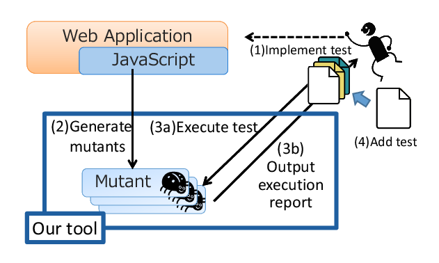

Mutation analysis tool for JavaScript Web Applications
AjaxMutator is a tool to conduct a Mutation Testing (or Analysis) on JavaScript Web Applications. Current implementation support 10 mutation operators for programs written in JavaScript. This also support some syntax of jQuery library.
Using AjaxMutator, you can confirm fault-finding capability (namely mutation score) of your Test cases. Test designer can refer it to improve test cases.